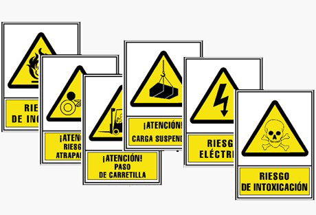

Empresa creada en el 2014, aventura con la que pretendo dar un nuevo aire al Servicio Ajeno de Consejero de Seguridad, adaptándome a la nueva Legislación e introduciendo un Método de Trabajo propio, basado en la experiencia de todos estos años y en la cercanía con el cliente.
Al frente de la misma esta José Carlos Medina De Dios, Ingeniero Técnico Industrial por la Universidad de Jaén, Técnico Superior en Prevención de Riesgos Laborales, Master por Escuela de Formación Empresarial en Calidad y Medio Ambiente y Consejero de Seguridad por el Ministerio de Fomento. Además, cuenta con el Certificado de Aptitud Pedagógica por la Universidad de Jaén y Formador de Formadores por FOREM.
El 2001, comienza su andadura profesional en el sector de la distribución de Fitosanitarios y desde 2.002, de forma paralela, colaborando con ADR Seguridad y Control Medioambiental S.L. e Instituto Andaluz de Logística SL, empresas dedicadas a la prestación del Servicio Ajeno de Consejero de Seguridad. Empresas en las que continua su labor profesional desde el 2011 con dedicación exclusiva, hasta la creación de ADR Consejeros en el 2014.
Para entender en qué consiste la figura del Consejero de Seguridad, primero debemos saber que es el ADR.
Las siglas ADR, con las que se conoce usualmente este convenio, provienen de las iniciales del pacto en inglés y en francés:
Traducido al Español, ADR significa Acuerdo Europeo sobre Transporte Internacional de Mercancías Peligrosas por Carretera.
Se entiende por Mercancías Peligrosas (MMPP) aquellas materias y objetos cuyo transporte está prohibido según el ADR o autorizado únicamente en las condiciones que éste prevé, es decir las MMPP son aquellas que en caso de accidente durante su transporte, pueden suponer riesgos para la población, los bienes y el medio ambiente, y cuyas condiciones de transporte se encuentran reguladas de forma especial.
El ADR es, en definitiva, un acuerdo europeo que regula el transporte internacional de mercancías peligrosas por carretera, mediante el cual la mayoría de los Estados de Europa han convenido una serie de normas o reglas comunes para el transporte de mercancías peligrosas por carretera en su territorio y para el paso por las fronteras.
Cada país, adopta en su legislación interna la aplicación del acuerdo, asignando las Autoridades competentes para velar por su cumplimiento. En España, es el Ministerio de Fomento, y según el Real Decreto 97/2014, de 14 de febrero, por el que se regulan las operaciones de transporte de mercancías peligrosas por carretera en territorio español, se expresa en su Artículo 2, que las normas del Acuerdo europeo sobre transporte internacional de mercancías peligrosas por carretera (ADR) serán de aplicación a los transportes que se realicen íntegramente dentro del territorio español.
Este acuerdo es revisado cada dos años, años impares, con el fin de tener en cuenta los avances técnicos, así como la aparición de materias nuevas, cambios en el etiquetado, etc.
En líneas generales el ADR regula aspectos tales como:
Que es el Consejero de Seguridad.
Es un técnico cuyo principal cometido es el de la prevención de los riesgos inherentes a las actividades de transporte, carga y descarga de Mercancías Peligrosas. Alcanzar la máxima seguridad en dichas operaciones, lógicamente dentro del marco normativo Europeo y Español.
La figura del Consejero de Seguridad se establece en Europa mediante la Directiva 96/35/CE del Consejo de 3 de junio de 1996 (actualizada y derogada por la Directiva 2008/68/CE de 24 de septiembre de 2008) relativa a la designación y a la cualificación profesional de consejeros de seguridad para el transporte por carretera. Dicha norma exige, como medida de seguridad preventiva, que las empresas cuya actividad implique el transporte de mercancías peligrosas por carretera, por ferrocarril o por vía navegable, o bien las operaciones de carga o descarga ligadas a dichos transportes deberán disponer de uno o varios Consejeros de Seguridad encargados de contribuir a la prevención de los riesgos inherentes al transporte de mercancías peligrosas.
En el marco legislativo nacional, la primera referencia a la figura del Consejero de Seguridad se realiza mediante el Real Decreto 1566/1999, de 8 de octubre, sobre los consejeros de seguridad para el transporte de mercancías peligrosas por carretera, por ferrocarril o por vía navegable, que transpuso al ordenamiento interno la Directiva 96/35/CE. Este Real Decreto 1566/1999 ha sido sustituido, en cuanto a lo que se refiere a Transporte por carretera, por el Real Decreto 97/2014, de 14 de febrero, por el que se regulan las operaciones de transporte de mercancías peligrosas por carretera en territorio español.
Que empresas necesitan tener un Consejero de Seguridad.
"Las empresas que carguen, descarguen, transporten o embalen mercancías peligrosas y no se vean afectadas por algún tipo de exención en las condiciones y cantidades previstas en el ADR"
Nuestra principal actividad es la prestación del Servicio Ajeno de Consejero de Seguridad a las empresas afectadas por el RD 97/2014. Para ello, contamos con una dilatada experiencia que nos ha llevado a elaborar un sistema propio de trabajo, que se adapta a las particularidades de cada empresa, dando así respuesta a sus necesidades y a la Normativa vigente.
¿Que le ofrecemos?
¿Por qué elegirnos?
Nuestro objetivo principal es ofrecer un servicio de calidad y personalizado, que de respuesta inmediata a sus consultas y solución a sus problemas. Creemos firmemente que la cercanía con el cliente es fundamental, así como tener un profundo conocimiento de su empresa, por ello basamos nuestro Servicio Ajeno de Consejero de Seguridad en la cercanía y en visitas personales a sus instalaciones.
Queremos trabajara con usted para conseguir minimizar los riesgos que implican las operaciones con las Mercancías Peligrosas. Consiguiendo de este modo, además de un alto nivel de seguridad, evitar las cuantiosas sanciones que el incumplimiento de la Normativa conlleva.
Queremos conocerlo y prepararle un presupuesto personalizado sin compromiso.
Entre las Obligaciones del Consejero de Seguridad, indicadas en el 1.8.3.3 del ADR esta:
Además, en el Capitulo 1.3 nos indica que los empleados serán formados antes de asumir responsabilidades y no pueden realizar funciones para las que todavía no han recibido la formación requerida.
Igualmente, la Ley de Prevención de Riesgos Laborales (Ley 31/95) que en su artículo 19 obliga a los empresarios a formar a los trabajadores.
“Artículo 19: Formación de los trabajadores” En cumplimiento del deber de protección, el empresario deberá garantizar que cada trabajador reciba una formación teórica y práctica, suficiente y adecuada, en materia preventiva, tanto en el momento de su contratación, cualquiera que sea la modalidad o duración de ésta, como cuando se produzcan cambios en las funciones que desempeñe o se introduzcan nuevas tecnologías o cambios en los equipos de trabajo. La formación deberá estar centrada específicamente en el puesto de trabajo o función de cada trabajador, adaptarse a la evolución de los riesgos y a la aparición de otros nuevos y repetirse periódicamente, si fuera necesario.
Como constancia de todo ello, anualmente se refleja este dato en el apartado 9.1 del Informe Anual, siendo este un documento Oficial.
Para dar cumplimiento a sus obligaciones respecto a ambas Legislaciones (ADR y Ley de Prevención de Riesgos Laborales), le ofrecemos cursos específicos, perfectamente adaptados a las operaciones realizadas en su empresa. Dichos cursos, atendiendo a las necesidades particulares, se pueden realizar de forma presencial o en la modalidad de Teleformación a través de una plataforma virtual donde se contará con un tutor que ayudará y guiará al alumno durante el curso.
Nos ponemos a su disposición para prepararle un presupuesto personalizado sin compromiso.
El ADR en su capítulo 8.1 obliga a los vehículos que transportes MM.PP, no acogidos a ninguna exención, a llevar un equipamiento especial que puede variar en función del número de tripulantes y de las materias transportadas. Este equipamiento debe ajustarse a lo indicado en la siguiente tabla:
Para dar cumplimiento a esta exigencia, ponemos a su disposición todo el equipamiento necesario.
Igualmente, el ADR obliga a los vehículos que transportes MM.PP, no acogidos a ninguna exención, a llevar una señalización especifica que puede variar en función de las materias transportadas y de la forma de transporte.
Para dar cumplimiento a esta exigencia, ponemos a su disposición toda la señalización necesaria.
La señalización dirigida a advertir a los trabajadores de la presencia de un riesgo, o a recordarles la existencia de una prohibición u obligación, se realizará mediante señales en forma de panel que se ajusten a lo dispuesto, para cada caso, en el anexo III del RD 485/97.
Nos ponemos a su disposición para prepararle un presupuesto personalizado sin compromiso.
Para darle soluciones a problemas que le pueden surgir le ofrecemos nuestra red de colaboradores altamente cualificados y especializados en un sector concreto.
| Realización de proyectos | Gestión de Residuos | Recurso de Sanciones |
| Inspecciones EESS | Carné MMPP y CAP | Material de Protección |
Estaremos encantados de contestarle